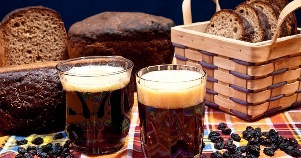

Ржаной квасНарезать 1,5 кг ржаного хлеба на ломтики и просушить в духовке, сухари наломать и, залив 10 л кипятка, оставить на 4 часа в эмалированной посуде. Когда жидкость остынет, процедить ее и добавить 800 г сахара с растертыми в нем дрожжами (30 г). Оставить емкость на 12 часов под крышкой. Положить в бутылки по 2–3 изюминки и налить в них настоявшуюся жидкость. Плотно закупорить бутылки. Первые 24 часа держать их в теплом месте, а затем перенести в холодное.
Через 4 дня квас готов к употреблению.
Сухарный квасНарезать ломтиками 1 кг ржаного хлеба, подсушить в духовке, чтобы они хорошо подрумянились, сложить в кастрюлю, влить 5–6 л крутого кипятка, после чего закрыть крышкой, дать настояться и остыть. Процедить настой, добавить 1 стакан сахара, 25–30 г дрожжей, несколько листиков мяты и оставить на 6–8 часов. Когда начнется брожение и появится пена, процедить вторично, разлить по литровым бутылкам с завинчивающимися крышками (по плечики), положить в каждую по 5–7 изюминок, плотно завинтить крышки и вынести на холод (хранить бутылки в лежачем положении). Через 2–3 дня квас будет готов.
Сухарно-мятный квасРаздробить 1,2 кг ржаных сухарей, залить их 13 л горячей (80 °C) воды, размешать и настаивать 6–8 часов. Прозрачное сусло осторожно слить, добавить 600 г сахара и 50 г мяты, охладить до 25 °C, внести дрожжи и сбраживать 20 часов. Бродящее сусло разлить в бутылки, положив в каждую по 2 изюмины, и выдерживать при комнатной температуре до появления пузырьков. Затем бутылки закупорить пробками и вынести на холод.
Через 1–2 дня квас можно пить.
Квас душистый с мятойНарезать хлеб мелкими ломтиками и подсушить в духовке. Полученные сухари залить 6 л кипятка и через 10–12 часов процедить. К небольшому количеству сухарного настоя добавить 0,25 палочки прессованных дрожжей и поставить в теплое место для брожения. В оставшемся сухарном настое заварить 1 ч. ложку молотой мяты или 0,5 ч. ложки мятной эссенции, прокипятить и всыпать туда же 1 стакан сахара. После того как подойдут дрожжи, влить их в сухарный настой, прибавить мяту с сахаром, перемешать. Накрыть салфеткой, поставить в теплое место и держать до появления густой пены. Аккуратно снять пену, процедить жидкость и разлить в бутылки, не заполняя их доверху. Затем бутылки плотно закрыть пробками и поставить в холодное место.
Через 12 часов квас будет готов.
Мятный квасИзмельчить 270 г ржаных сухарей, высыпать в неокисляющуюся посуду, залить 6 л воды, размешать, покрыть крышкой, завязать плотной тканью и поставить в теплое место на 1,5–2 часа для настаивания, периодически помешивая. Затем полученное сусло слить, добавить разведенные в теплой воде дрожжи, но не более 30–60 г, 9 ст. ложек сахара, 12–18 веточек мяты и выдержать при комнатной температуре 10–12 часов. После этого квас процедить через марлю и разлить в бутылки, добавив в каждую 2–3 изюминки. Бутылки плотно закупорить, выдержать при комнатной температуре еще 2–3 часа, а затем поставить в холодильник, на ледник или в любое прохладное место.
Северный квасПоложить в стеклянную или эмалированную посуду 0,5 кг ржаных сухарей и 1 кг нарезанного кусочками черствого, хорошо выпеченного ржаного хлеба, добавить 5 ст. ложек высушенных и измельченных листьев черной смородины и 1 стакан сахара, залить 6–7 л кипятка. Тщательно перемешать, накрыть крышкой, укутать полотенцем или плотной скатертью и оставить на 3–4 часа.
Процедить настой, добавить 1 стакан сахара, 25–30 г дрожжей, несколько листиков мяты и оставить для настаивания и осветления на 3 часа.
Когда сусло закиснет, отцедить его от гущи в другую посуду и прокипятить. Остудить, прокипятить еще раз, разлить в бутылки, добавить в каждую по 2–3 изюминки. Закупорить смоченными в кипятке пробками, выдержать 3–4 часа в тепле и вынести на холод на 7–8 дней.
Казацкий квасВ 3 ведрах кипятка запарить 1,2 кг сухарей, настаивать 8 часов. Развести 8 г сухих дрожжей с 1 ст. ложкой муки и 100 мл настоя из сухарей и дать перебродить. Процедить, всыпать 2 кг сахара, влить закваску из дрожжей и поставить бродить на 12 часов. После этого профильтровать, разлить в бутылки с кусочками лимона, выдержать еще 2 часа в тепле и вынести на холод.
Бородинский квасНарезать 1 кг «бородинского» хлеба ломтиками и подсушить их в духовке, чтобы они подрумянились, сложить в эмалированную или стеклянную посуду, добавить листики мяты по вкусу, залить 6–7 л крутого кипятка, закрыть крышкой, дать постоять 3 часа.
Приготовить опару из 1 стакана разведенных дрожжей (25–30 г сухих) и пшеничной муки, дать подойти и добавить в остывшее сусло.
Когда брожение закончится (хлеб и мята поднимутся на поверхность) и появится пена, процедить вторично и дать квасу отстояться, затем разлить по литровым бутылкам (по плечики), положить в каждую по 2–3 изюминки, закупорить замоченными в кипятке пробками, выдержать 3–4 часа в тепле и вынести на холод (хранить бутылки лежа). Через 2–3 дня квас будет готов.
Сухарный квас с хреномЗалить 800 г ржаных сухарей 4 л крутого кипятка и дать 2 часа отстояться, а затем процедить через сито. Добавить в жидкость дрожжи (25 г) и сахар (0,5 кг).
Дать жидкости выбродиться в течение 6 часов и добавить 100 г тертого хрена, смешанного со 100 г меда. Жидкость тщательно перемешать, разлить по бутылкам и поставить на холод.
Квас хлебный литовскийВ эмалированную посуду налить 12 л горячей (80 °C) воды, положить туда 1,5 кг ржаных сухарей. Перемешать и оставить на 6–8 часов. Когда сусло остынет до 25–27 °C, слить его через полотняный мешочек или через двойной слой марли, добавить 500 г сахара, 50 г изюма, 2–3 ст. ложки разведенных хлебопекарных дрожжей и 30–40 г лимонной кислоты. Оставить бродить на 1 сутки, после чего разлить в бутылки из-под шампанского, укупорить пропаренными пробками (пробки привязать к горлышку бутылки) и вынести в прохладное место.
Через 1–3 дня напиток готов к употреблению.
Хлебно-медовый квасПриготовить 1,2 кг ржаных сухарей, залить их 12 л горячей (80 °C) воды, размешать и оставить на 6–8 часов для настаивания. Осветлившееся сусло осторожно слить, добавить 0,6 кг меда, 30 г лимонной кислоты, охладить до 25 °C и внести 10–20 г разведенных дрожжей. Хорошо перемешать и сбраживать 20 часов. Молодой квас разлить в бутылки через воронку с ватой. В каждую бутылку положить по 2 изюминки.
Некоторое время, до появления пузырьков углекислоты, бутылки выдерживают при комнатной температуре, затем его следует укупорить пробками и вынести в прохладное помещение,
Петровский квасНарезать 1 кг ржаного хлеба ломтиками и подсушить в духовке, чтобы они подрумянились, сложить в эмалированную или стеклянную посуду, залить 6–7 л крутого кипятка, закрыть крышкой, дать постоять 3–4 часа.
Сусло процедить, добавить 0,5 стакана меда, 25–30 г дрожжей, 100 г тертого хрена для «ядрености», дать перебродить 10–12 часов. Когда появится пена, процедить вторично, разлить по литровым бутылкам (по плечики), положить в каждую по 2–3 изюминки, закупорить размоченными в кипятке пробками, выдержать 3–4 часа в тепле и вынести на холод (хранить бутылки лежа). Через 2–3 дня квас готов к употреблению.
Суточный квас (старинный рецепт)Взять 1,2 кг черствого, хорошо выпеченного и в маленьких кусочках хорошо высушенного ржаного хлеба, положить в кадку, налить туда 14 л кипятка, тотчас плотно прикрыть скатеркой, дать так постоять, пока не остынет до теплоты парного молока, затем процедить через салфетку, но не выжимать. Положить на эту порцию 800 г хорошей темной патоки, размешать, чтобы не оставалось на дне, и тогда влить 2 ст. ложки дрожжей с примесью 1 ст. ложки пшеничной муки.
Поставить на 12 часов в тепло, утром процедить и перелить в бутылки, положив в каждую по 2 изюминки, закупорить размоченными в кипятке пробками и поставить в погреб.
Через 2 дня можно употреблять.
Скорый квасНарезать ломтиками 1 кг черствого, хорошо выпеченного ржаного хлеба и подсушить в духовке, чтобы они подрумянились, сложить в эмалированную или стеклянную посуду, залить 4 л крутого кипятка, закрыть крышкой, дать постоять в течение 3–4 часов.
После того как сусло станет коричневым с характерным запахом ржаного хлеба, процедить, но не выжимать, а залить размокший хлеб 2 л кипятка и дать постоять 1 час.
Процедить, влить полученное сусло в старый настой, добавить 1 стакан меда, 200 г тертого хрена, довести до кипения и охладить. Добавить лимонный сок для подкисления.
Пить охлажденным.
Квас с истодом сибирскимПриготовить 200 г ржаных сухарей, измельчить, залить 4 л воды, настоять в течение 2 часов, добавить 40 г дрожжей, 4 стакана сухих листьев истода сибирского, 8 ст. ложек сахарного песка и выдержать при комнатной температуре 12 часов.
Разлить в бутылки и охладить.
Тминный квасВзять 1 кг черного хлеба, нарезать его небольшими кусочками и высушить. Добавить 30–50 г тмина.
Вскипятить 10 л воды, залить ею высушенный хлеб и оставить примерно на 3–4 часа, после чего процедить, добавить 25 г дрожжей, 500 г сахара, затем поставить в теплое место для брожения. Процедить, разлить в бутылки.